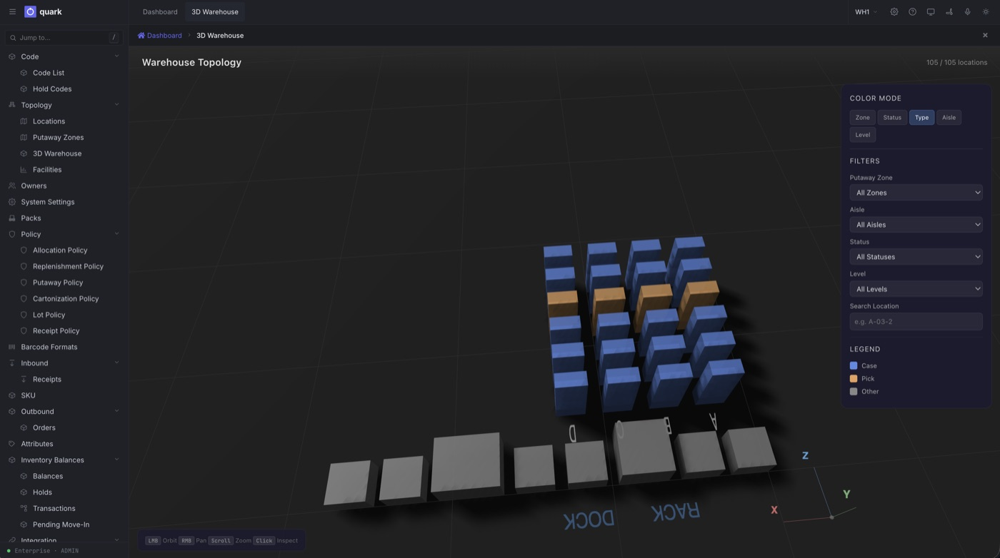
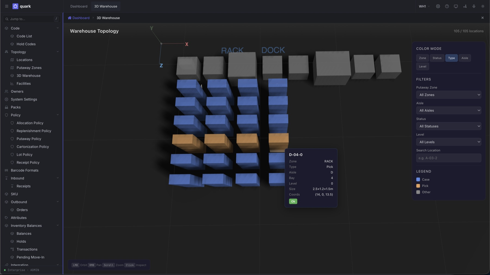
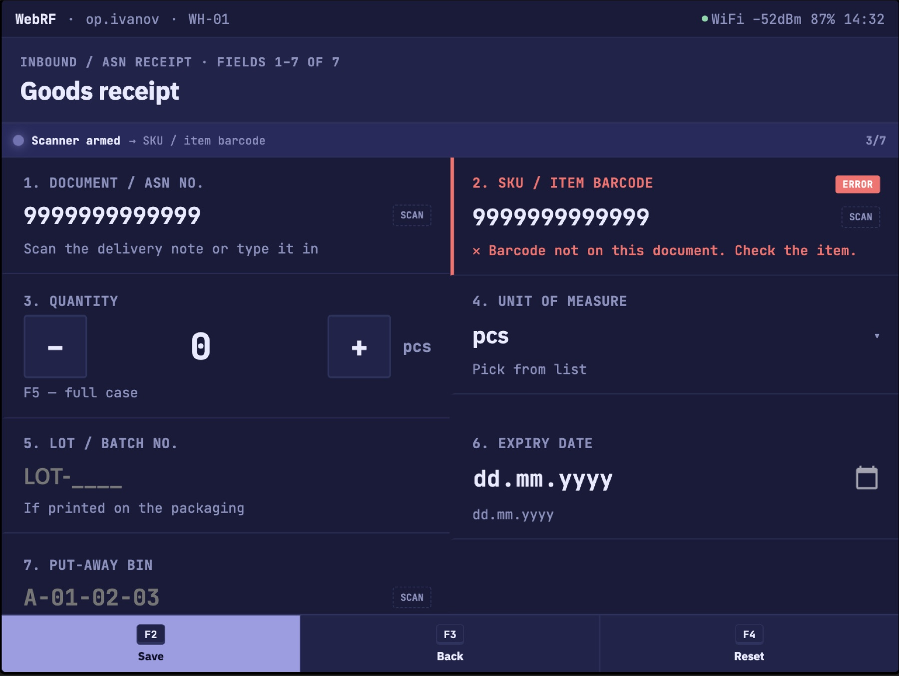
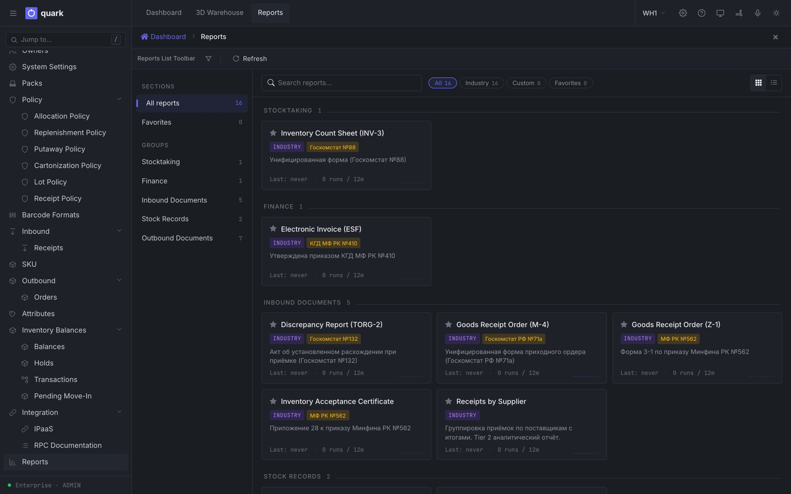
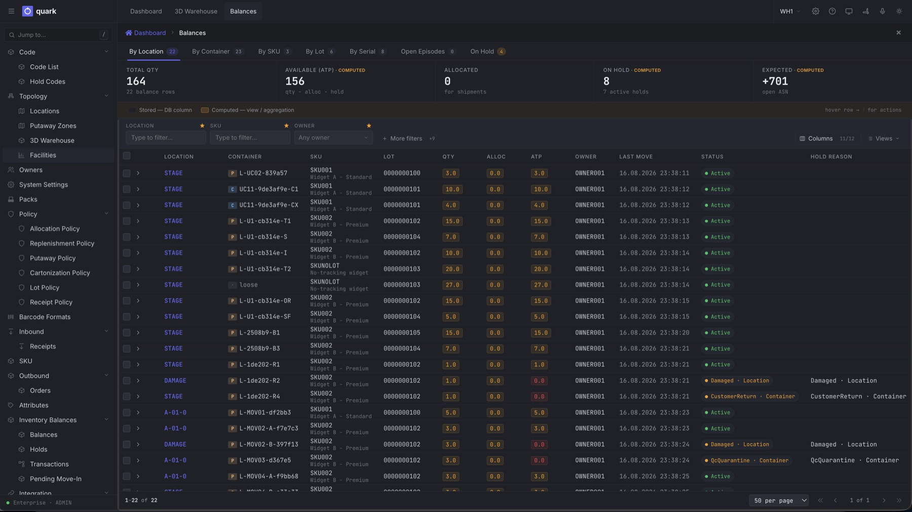
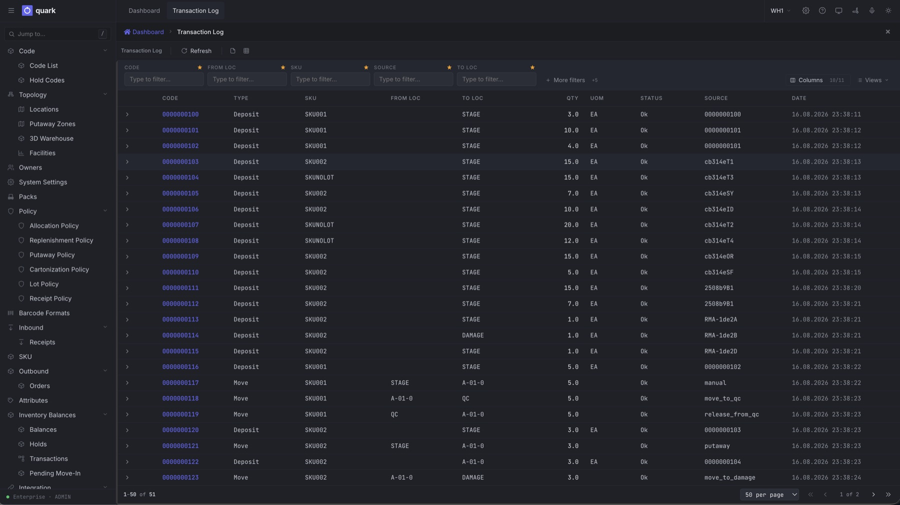
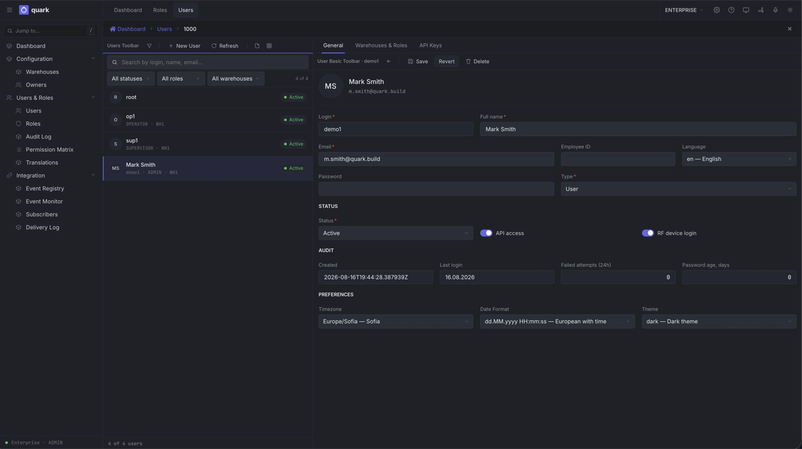
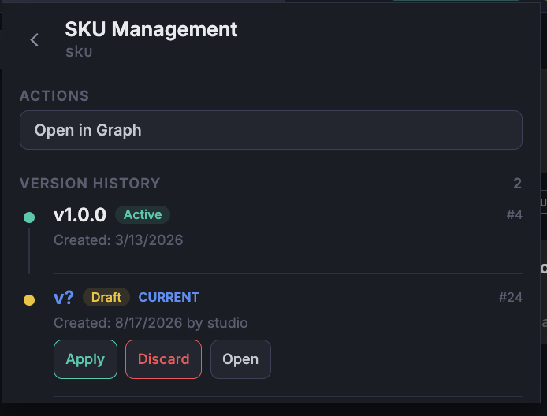
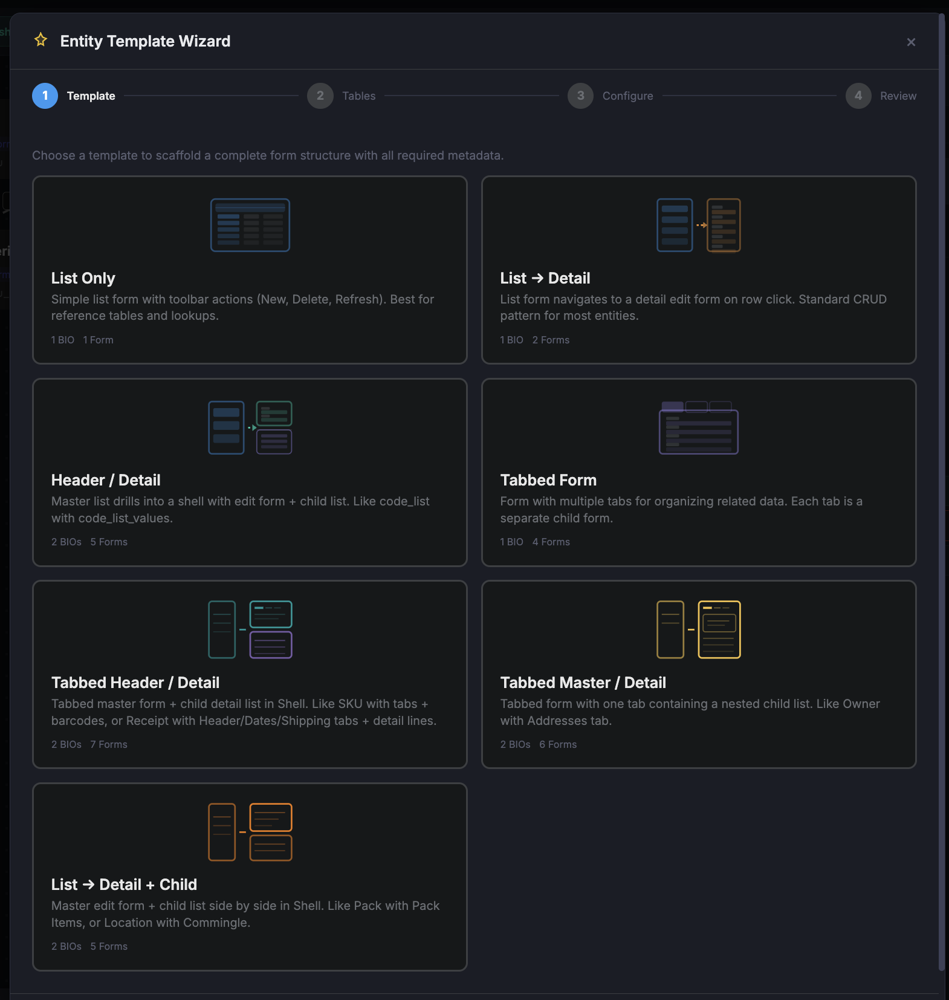

Nine more screens from a running system. Nothing here is
a mockup or a render — these are the same builds our
operators log into. Click any to enlarge.

Topology. The warehouse as it is actually
shaped — racks, aisles, zones, drawn from the same
metadata the pickers walk.

Any bin, inspected. Zone, type, aisle,
bay, level, dimensions.

Validation, on the device. The rule fires
where the work happens, not in a nightly
report.

Statutory documents. Sixteen forms — TORG‑2,
M‑4, M‑11, INV‑3 — out of the box, not as a
customisation project.

Balances. One stock figure, six ways to read
it — with holds and quarantine spelled out rather
than netted away.

Movements. Every move carries the reason it
happened — put‑away, QC, damage, return. This is what
an auditor reads.

Identity. API keys and RF device logins sit
beside human accounts — because agents and scanners
are actors too.

Version history. One active version, one
current draft, and three ways to end it — apply,
discard, open.

Scaffolds. Seven templates, each declaring
how many business objects and forms it will
produce.
Back to the argument — the six plates that carry
it.Return to Quark →